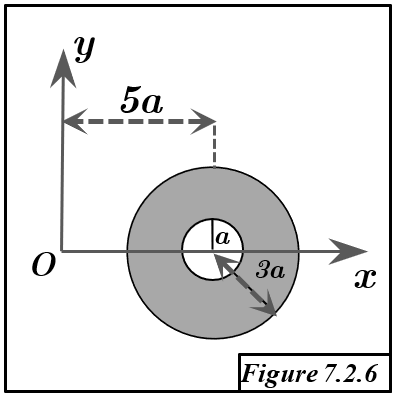

Solution Figure 7.2.6 : Disque surfacique creux (Annulus)

FIGURE 7.2.6 - Annulus : centre C(5a,0), rayons $r_1=a, r_2=3a$.
Méthode et Géométrie
- Objectif : Trouver le centroïde $G=(x_G, y_G, z_G)$ de l'annulus ($z_G=0$).
- Méthode : Deuxième Théorème de Guldin ($V_{/\Delta} = S \times (2\pi R_G)$).
- Géométrie de l'Annulus :
- Centre géométrique : C(5a, 0, 0).
- Rayons : intérieur $r_1 = a$, extérieur $r_2 = 3a$.
- Aire : $S_{annulus} = \pi r_2^2 - \pi r_1^2 = \pi (3a)^2 - \pi (a)^2 = 9\pi a^2 - \pi a^2 = 8\pi a^2$.
- Symétrie : L'annulus est symétrique par rapport à son centre C(5a,0,0). Donc, $G$ doit coïncider avec C. $G=(5a,0,0)$. Guldin sert ici de confirmation.
Calcul du Centroïde $G = (x_G, y_G, 0)$ par Guldin
1. Coordonnée $x_G$ (Rotation autour de l'axe Oy)
- Axe de rotation : Oy ($x=0$). L'axe est extérieur à l'annulus ($x_{min} = 5a-3a = 2a > 0$). Distance de G à Oy : $R_{G, Oy} = x_G$.
- Volume généré ($V_{/Oy}$) : Rotation de l'annulus $\rightarrow$ Volume du tore à section annulaire (ou différence des volumes générés par les disques $D_2$ et $D_1$).
- Les deux disques $D_1$ (rayon $r_1=a$) et $D_2$ (rayon $r_2=3a$) ont leur centroïde en C(5a,0,0).
- $V_{D2,/Oy} = (\text{Aire } D_2) \times (2\pi \times \text{dist C à Oy}) = (9\pi a^2) \times (2\pi \cdot 5a) = 90 \pi^2 a^3$.
- $V_{D1,/Oy} = (\text{Aire } D_1) \times (2\pi \times \text{dist C à Oy}) = (\pi a^2) \times (2\pi \cdot 5a) = 10 \pi^2 a^3$.
- $V_{annulus,/Oy} = V_{D2,/Oy} - V_{D1,/Oy} = 90 \pi^2 a^3 - 10 \pi^2 a^3 = 80 \pi^2 a^3$.
- Application de Guldin à l'annulus : $V_{annulus,/Oy} = S_{annulus} \times (2\pi x_G)$.
$$ 80 \pi^2 a^3 = (8\pi a^2) \times (2\pi x_G) = 16 \pi^2 a^2 x_G $$
- Calcul de $x_G$ :
$$ x_G = \frac{80 \pi^2 a^3}{16 \pi^2 a^2} = 5a $$
2. Coordonnée $y_G$ (Rotation autour d'un axe parallèle à Ox, e.g., $\Delta: y=-4a$)
- Axe de rotation : $\Delta$ ($y=-4a$). L'axe est extérieur à l'annulus ($y_{min} = -3a > -4a$). Distance de G à $\Delta$ : $R_{G, \Delta} = |y_G - (-4a)| = |y_G+4a|$.
- Volume généré ($V_{/\Delta}$) : Différence des volumes générés par $D_2$ et $D_1$.
- Centroïdes de $D_1, D_2$ en C(5a,0,0). Distance de C à $\Delta$: $|0 - (-4a)| = 4a$.
- $V_{D2,/\Delta} = (9\pi a^2) \times (2\pi \cdot 4a) = 72 \pi^2 a^3$.
- $V_{D1,/\Delta} = (\pi a^2) \times (2\pi \cdot 4a) = 8 \pi^2 a^3$.
- $V_{annulus,/\Delta} = V_{D2,/\Delta} - V_{D1,/\Delta} = 72 \pi^2 a^3 - 8 \pi^2 a^3 = 64 \pi^2 a^3$.
- Application de Guldin à l'annulus : $V_{annulus,/\Delta} = S_{annulus} \times (2\pi |y_G+4a|)$.
$$ 64 \pi^2 a^3 = (8\pi a^2) \times (2\pi |y_G+4a|) = 16 \pi^2 a^2 |y_G+4a| $$
- Calcul de $y_G$ :
$$ |y_G+4a| = \frac{64 \pi^2 a^3}{16 \pi^2 a^2} = 4a $$
Sachant $y_G=0$ par symétrie, $y_G+4a = 4a > 0$.
$$ y_G+4a = 4a \implies y_G = 0 $$
Résultat
Le centroïde G de l'annulus a pour coordonnées :
$$ x_G = 5a $$
$$ y_G = 0 $$
$$ z_G = 0 $$
Soit $G = (5a, 0, 0)$.
Conclusion
- Le centroïde G de l'annulus coïncide avec son centre géométrique C(5a,0,0).
- Ce résultat, attendu par symétrie, est confirmé par le théorème de Guldin.